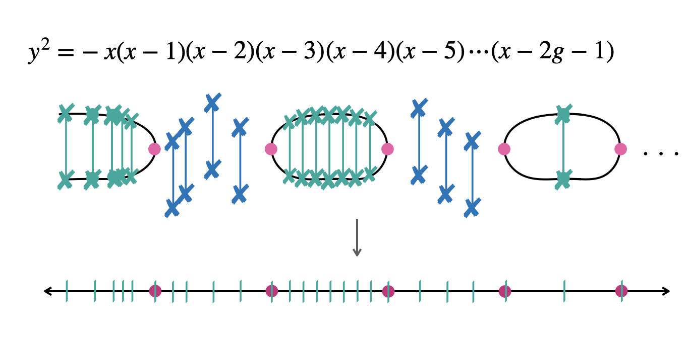
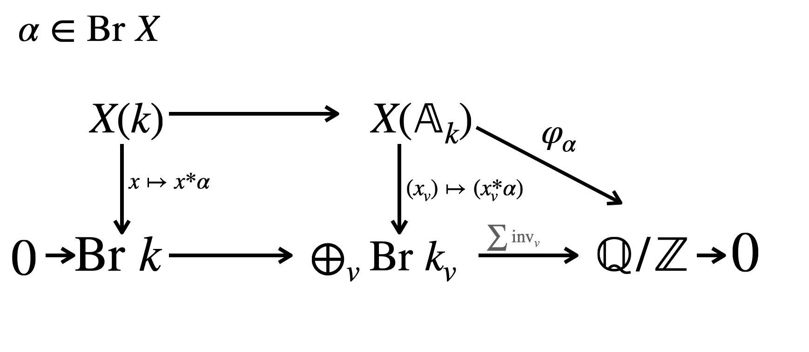
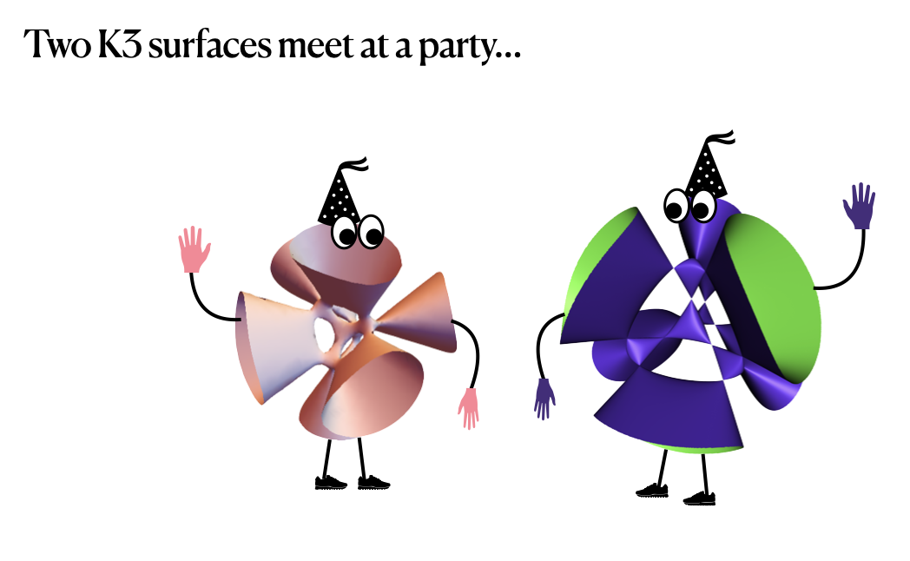

Research
Complete lists of my preprints and publications can be found on my arXiv page and on my MathSciNet author page (subscription required).
Research areas
Under construction: research descriptions in progress

Algebraic points on curves
Leveraging geometric tools to organize \(\overline{k}\) points on a curve over a number field.

The Brauer–Manin obstruction
Capturing subgroups and studying behavior under field extensions.

Rational points on surfaces
Explicit computation of the Brauer group and Brauer–Manin obstruction on surfaces.
The arithmetic of a curve over a number field \(k\) encapsulates all of its \(\overline{k}\) points together with the action of the absolute Galois group. Points on curves can also be viewed as divisors, and this dual identity gives powerful geometric tools to approach the problem. My research in this direction aims to leverage these geometric tools to organize and perhaps even understand \(\overline{k}\) points on a curve.
The article Isolated and parameterized points on curves, written jointly with Isabel Vogt, gives an introduction to these ideas with several examples.
Talks
Colloquium at CRM, April 2024:
Workshop at ICERM, June 2025: video
Papers
- Number fields generated by points in linear systems on curves, joint with Irmak Balçik, Stephanie Chan, and Yuan Liu — arXiv
- Superelliptic degree sets over Henselian fields, by Alex Galarraga and Alex Wang — arXiv
- Degrees of points on varieties over Henselian fields, joint with Brendan Creutz — arXiv
- On the level of modular curves that give rise to isolated j-invariants, joint with Abbey Bourdon, Ozlem Ejder, Yuan Liu and Frances Odumodu — arXiv
In 2022, I gave a lecture series at the Park City Mathematics Institute (PCMI) Graduate Summer School: Rational points on varieties and the Brauer-Manin obstruction. My lecture notes give an introduction to the Brauer-Manin obstruction, so-called “capturing” subgroups, and questions concerning the Brauer-Manin obstruction over extensions.
Talks (PCMI 2022)
Capturing subgroups
- Brauer-Manin obstructions requiring arbitrarily many Brauer classes, joint with Jennifer Berg, Carlo Pagano, Bjorn Poonen, Michael Stoll, Nicholas Triantafillou, and Isabel Vogt — arXiv
- The \(d\)-primary Brauer-Manin obstruction for curves, joint with Brendan Creutz and Felipe Voloch — arXiv
- Degree and the Brauer-Manin obstruction, joint with Brendan Creutz, with an appendix by Alexei Skorobogatov — arXiv
Obstruction under extensions
- On the Hasse principle for conic bundles over even extensions, by Sam Roven and Alex Wang — arXiv
- Quartic del Pezzo surfaces without quadratic points, joint with Brendan Creutz — arXiv
- Quadratic points on intersections of two quadrics, joint with Brendan Creutz — arXiv
- Persistence of the Brauer-Manin obstruction on cubic surfaces, joint with Carlos Rivera — arXiv
In 2015, I gave a lecture series at the Arizona Winter School about explicit computation of the Brauer group and the Brauer-Manin obstruction on surfaces. Lecture notes are available on the Arizona Winter School website.
Talks (Arizona Winter School 2015)
Papers
- Insufficiency of the Brauer-Manin obstruction for Enriques surfaces, joint with Francesca Balestrieri, Jennifer Berg, Michelle Manes, and Jennifer Park — arXiv
- Unramified Brauer classes on cyclic covers of the projective plane, joint with Colin Ingalls, Andrew Obus, and Ekin Ozman — arXiv
- On Brauer groups of double covers of ruled surfaces, joint with Brendan Creutz — arXiv
- Two torsion in the Brauer group of a hyperelliptic curve, joint with Brendan Creutz — arXiv
- Vertical Brauer groups and del Pezzo surfaces of degree 4, joint with Anthony Várilly-Alvarado — arXiv
- Higher dimensional analogs of Châtelet surfaces, joint with Anthony Várilly-Alvarado — arXiv
- Failure of the Hasse principle for Enriques surfaces, joint with Anthony Várilly-Alvarado — arXiv
- Failure of the Hasse principle for Châtelet surfaces in characteristic \(2\) — arXiv